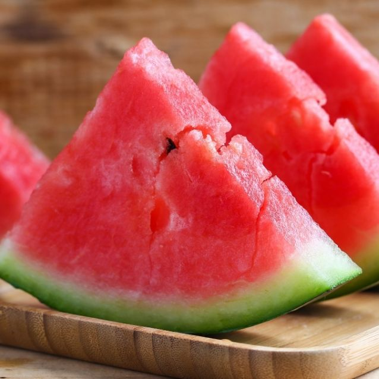

¿Cuál es la etiqueta principal utilizada para crear una tabla en HTML?
La etiqueta table es la principal para realizar una tabla en HTML, esta se cierra con /table.
¿Qué etiqueta se utiliza para definir una fila en una tabla?
La etiqueta que se utiliza para definir una fila es tr (table row)
¿Cuál es la etiqueta utilizada para crear una celda de encabezado en una tabla?
Se utiliza th para crear una celda de encabezado.
¿Cuál es la etiqueta utilizada para crear una celda de datos en una tabla?
Se utiliza td para crear una celda de datos.
¿Qué atributo se utiliza para especificar cuántas columnas debe abarcar una celda?
Con el atributo colspan se pueden expandir las celdas que necesitamos.
¿Qué atributo se utiliza para especificar cuántas filas debe abarcar una celda?
Con el atributo rowspan se puede expandir hacia abajo las filas que necesitemos.
Si necesitamos crear una tabla con 10 filas ¿qué etiqueta y cuántas veces se debe utilizar para definir las
filas?
Hay que utilizar la etiqueta tr para empezar con el encabezado de la tabla y seguimos con td para crear las 10
filas que necesitamos.
👉 TABLA 1
Realizar una tabla que contenga 5 alimentos y por cada uno de ellos se debe visualizar: nombre, calorÃas, tipo
(fruta, verdura, lácteos, etc), imagen.
| Nombre |
Calorias |
Tipo |
Imagen |
| Sandia |
30 |
Fruta |
 |
| Mate |
75 |
Bebida |
 |
| Cheesecake |
321 |
Postre |
 |
| pizza |
266 |
Comida |
 |
| Helado de menta granizada |
219 |
Postre |
|
| POS. |
Número |
Piloto |
Marca |
Vueltas |
Tiempo |
Diferencias |
| 1° |
231 |
Urcera,José Manuel |
 |
25 |
39:28.539 |
| 2° |
121 |
Craparo,Elio |
 |
25 |
39:29.740 |
1.201 |
| 3° |
4 |
Castellano,Jonatan |
|
25 |
39:31.206 |
2.667 |
| 4° |
96 |
Benvenuti,Juan Cruz |
 |
25 |
39:33.118 |
4.579 |
| 5° |
10 |
Aguirre,ValentÃn |
|
25 |
39:33.764 |
5.225 |
| 6° |
19 |
Ciantini,Diego |
|
25 |
39:37.838 |
9.299 |